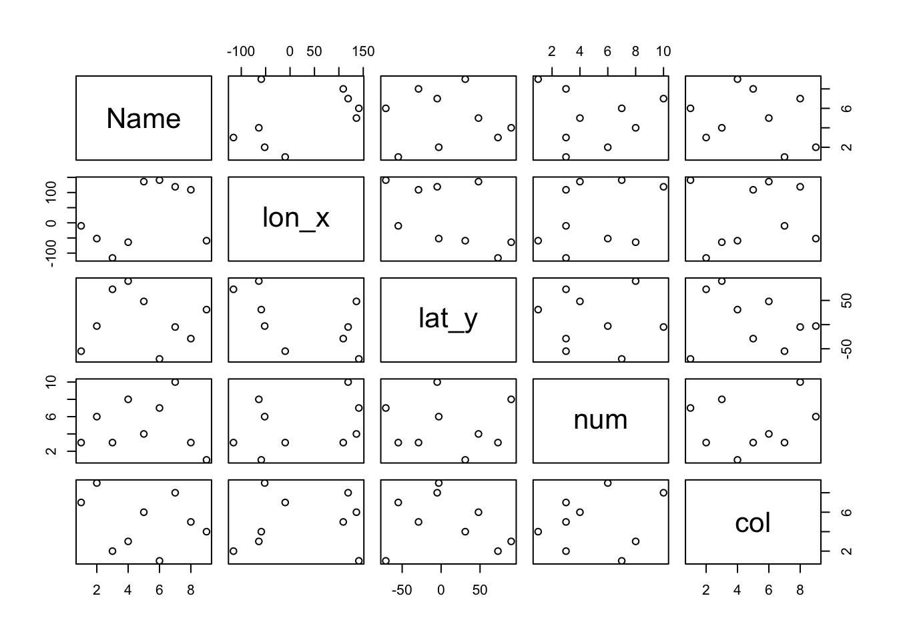

is.element('sf', installed.packages())[1] TRUElibrary(sf)Linking to GEOS 3.14.0, GDAL 3.11.3, PROJ 9.6.2; sf_use_s2() is TRUEWhen we start up our project, we will need to make sure we install and load the necessary packages. The ‘sf’ package should already be installed so we just need to load the ‘sf’ package from our library using the following code:
is.element('sf', installed.packages())[1] TRUElibrary(sf)Linking to GEOS 3.14.0, GDAL 3.11.3, PROJ 9.6.2; sf_use_s2() is TRUEWhen we load the dataset, we will need to use the st_read() command so as to read the file to R. This applies for both shapefiles and geojson files.
sg_pa = st_read("datasets/MP14_SUBZONE_WEB_PL.shp")Reading layer `MP14_SUBZONE_WEB_PL' from data source
`/Users/rachelkheng/Documents/MSE/Aug Sem/ECON6027 Spacial Econometrics/ECON6027 Spatial Econometrics and Data Analysis Notes/datasets/MP14_SUBZONE_WEB_PL.shp'
using driver `ESRI Shapefile'
Simple feature collection with 323 features and 15 fields
Geometry type: MULTIPOLYGON
Dimension: XY
Bounding box: xmin: 2667.538 ymin: 15748.72 xmax: 56396.44 ymax: 50256.33
Projected CRS: SVY21sg_spt = st_read("datasets/SportSGSportFacilitiesGEOJSON.geojson")Reading layer `SportSGSportFacilitiesGEOJSON' from data source
`/Users/rachelkheng/Documents/MSE/Aug Sem/ECON6027 Spacial Econometrics/ECON6027 Spatial Econometrics and Data Analysis Notes/datasets/SportSGSportFacilitiesGEOJSON.geojson'
using driver `GeoJSON'
Simple feature collection with 35 features and 2 fields
Geometry type: POLYGON
Dimension: XYZ
Bounding box: xmin: 103.6932 ymin: 1.285977 xmax: 103.9526 ymax: 1.435855
z_range: zmin: 0 zmax: 0
Geodetic CRS: WGS 84fav = read.csv("datasets/1c_data.csv")
class(fav)[1] "data.frame"plot(fav)
It is important to note that while csv files are a spatial dataset, they do not have any “spatial awareness”. Thus, we need to use the command st_as_sf with the “coords” argument that follows the cartesian coordinates convention (x,y).
library(sf)
(fav.sf = st_as_sf(fav, coords=c("lon_x","lat_y")))Simple feature collection with 9 features and 3 fields
Geometry type: POINT
Dimension: XY
Bounding box: xmin: -116 ymin: -71 xmax: 141 ymax: 90
CRS: NA
Name num col geometry
1 ABC 3 red POINT (-10 -55)
2 DEF 6 yellow POINT (-52 -3)
3 GHI 3 blue POINT (-116 73)
4 JKL 8 green POINT (-64 90)
5 MNO 4 purple POINT (136 48)
6 PQR 7 black POINT (141 -71)
7 STU 10 white POINT (119 -5)
8 VW 3 pink POINT (109 -29)
9 XYZ 1 orange POINT (-59 31)plot(st_geometry(fav.sf), main="Bucket List")sfg object contains only a single simple feature geometrysfc) is a list of sfg objects, which is additionally able to contain information about the coordinate system in useThis is important since sfc represents the geometry column in sf data frames.
In case that your data set is not in the same folder as the Quarto file, use the file path instead to ensure that the file is read properly in R.
Now that we have loaded our dataset, we will need to inspect the data as we will need to make sure that there are no false entries. These false entries could be due to overlapping polygons. As a habit, we should always check the validity especially if the dataset is downloaded from the Internet.
Always validate the dataset before we do anything else!
class(sg_pa)[1] "sf" "data.frame"summary(sg_pa) OBJECTID SUBZONE_NO SUBZONE_N SUBZONE_C
Min. : 1.0 Min. : 1.000 Length:323 Length:323
1st Qu.: 81.5 1st Qu.: 2.000 Class :character Class :character
Median :162.0 Median : 4.000 Mode :character Mode :character
Mean :162.0 Mean : 4.625
3rd Qu.:242.5 3rd Qu.: 6.500
Max. :323.0 Max. :17.000
CA_IND PLN_AREA_N PLN_AREA_C REGION_N
Length:323 Length:323 Length:323 Length:323
Class :character Class :character Class :character Class :character
Mode :character Mode :character Mode :character Mode :character
REGION_C INC_CRC FMEL_UPD_D X_ADDR
Length:323 Length:323 Min. :2014-12-05 Min. : 5093
Class :character Class :character 1st Qu.:2014-12-05 1st Qu.:21864
Mode :character Mode :character Median :2014-12-05 Median :28465
Mean :2014-12-05 Mean :27257
3rd Qu.:2014-12-05 3rd Qu.:31674
Max. :2014-12-05 Max. :50425
Y_ADDR SHAPE_Leng SHAPE_Area geometry
Min. :19579 Min. : 871.6 Min. : 39438 MULTIPOLYGON :323
1st Qu.:31776 1st Qu.: 3709.6 1st Qu.: 628261 epsg:NA : 0
Median :35113 Median : 5211.9 Median : 1229894 +proj=tmer...: 0
Mean :36106 Mean : 6524.4 Mean : 2420882
3rd Qu.:39869 3rd Qu.: 6942.6 3rd Qu.: 2106483
Max. :49553 Max. :68083.9 Max. :69748299 head(sg_pa)Simple feature collection with 6 features and 15 fields
Geometry type: MULTIPOLYGON
Dimension: XY
Bounding box: xmin: 24468.89 ymin: 28369.47 xmax: 32362.39 ymax: 30542.74
Projected CRS: SVY21
OBJECTID SUBZONE_NO SUBZONE_N SUBZONE_C CA_IND PLN_AREA_N
1 1 1 MARINA SOUTH MSSZ01 Y MARINA SOUTH
2 2 1 PEARL'S HILL OTSZ01 Y OUTRAM
3 3 3 BOAT QUAY SRSZ03 Y SINGAPORE RIVER
4 4 8 HENDERSON HILL BMSZ08 N BUKIT MERAH
5 5 3 REDHILL BMSZ03 N BUKIT MERAH
6 6 7 ALEXANDRA HILL BMSZ07 N BUKIT MERAH
PLN_AREA_C REGION_N REGION_C INC_CRC FMEL_UPD_D X_ADDR
1 MS CENTRAL REGION CR 5ED7EB253F99252E 2014-12-05 31595.84
2 OT CENTRAL REGION CR 8C7149B9EB32EEFC 2014-12-05 28679.06
3 SR CENTRAL REGION CR C35FEFF02B13E0E5 2014-12-05 29654.96
4 BM CENTRAL REGION CR 3775D82C5DDBEFBD 2014-12-05 26782.83
5 BM CENTRAL REGION CR 85D9ABEF0A40678F 2014-12-05 26201.96
6 BM CENTRAL REGION CR 9D286521EF5E3B59 2014-12-05 25358.82
Y_ADDR SHAPE_Leng SHAPE_Area geometry
1 29220.19 5267.381 1630379.3 MULTIPOLYGON (((31495.56 30...
2 29782.05 3506.107 559816.2 MULTIPOLYGON (((29092.28 30...
3 29974.66 1740.926 160807.5 MULTIPOLYGON (((29932.33 29...
4 29933.77 3313.625 595428.9 MULTIPOLYGON (((27131.28 30...
5 30005.70 2825.594 387429.4 MULTIPOLYGON (((26451.03 30...
6 29991.38 4428.913 1030378.8 MULTIPOLYGON (((25899.7 297...table(st_is_valid(sg_pa))
FALSE TRUE
9 314 class(sg_pa): Used to determine the class of the object, e.g., data.frame.summary(sg_pa): Calculates a 6-number summary including the minimum value, first quartile (25th percentile), median (50th percentile), mean, third quartile (75th percentile), and maximum value.head(sg_pa): Inspects the first 6 rows of the dataset.table(st_is_valid(sg_pa)): Creates a table for the object and checks the validity of the object.If there are false entries, use the command st_make_valid() to validate the object.
sg_pa = st_make_valid(sg_pa)
table(st_is_valid(sg_pa))
TRUE
323 sg_pa = st_make_valid(sg_pa): Used for making the object valid.table(st_is_valid(sg_pa)): Used for creating a table from the newly validated object.Now, we can visualize our dataset in the form of maps by using the plot() command. If there are many attributes in the dataset, we can use the max.plot() command together with the plot() command to limit the number of maps generated. If we wish to plot a map using a specific attribute, then we need to specify the attribute in the plot() command.
plot(sg_pa, max.plot = 12)plot(sg_pa["PLN_AREA_N"])plot(sg_pa, max.plot = 12): Plots our object; the max.plot function generates the number of maps specified (e.g., 12).plot(sg_pa["PLN_AREA_N"]): Plots our object based on the specified attribute we want (e.g., PLN_AREA_N).Before we can plot our dataset, we will need to extract the geometry for our geojson file. This is so that we can seoarate the spatial data freom other attribute information, allowing us to visualize, process, and interact with the geographic shapes (points, lines, polygons) using R. This process is necessary because geometry is what defines the map features, and extracting it provides a clean dataset for tasks like rendering maps, performing spatial analysis, or exchanging data between different platforms.
st_geometry(sg_spt)Geometry set for 35 features
Geometry type: POLYGON
Dimension: XYZ
Bounding box: xmin: 103.6932 ymin: 1.285977 xmax: 103.9526 ymax: 1.435855
z_range: zmin: 0 zmax: 0
Geodetic CRS: WGS 84
First 5 geometries:POLYGON Z ((103.7628 1.310547 0, 103.7628 1.310...POLYGON Z ((103.7644 1.311377 0, 103.7646 1.311...POLYGON Z ((103.6937 1.33894 0, 103.6937 1.3389...POLYGON Z ((103.8723 1.323252 0, 103.8723 1.323...POLYGON Z ((103.8774 1.306804 0, 103.8787 1.306...st_geometry(sg_spt): Extracts the geometry.After extracting the geometry, we can now plot the spatial data. To add colour to our plots, we can make use of the command col = “colour” as well as border = “colour” so that the plots are filled in colour. Additionally, the command main = “title” will create a title for the plot.
plot(sg_spt$geometry, col = "green", border = "darkblue", main="SportSG Sport Facilities Locations")Lastly, to load the plot of the dengue clusters on the Singapore map, we can make use of the library tmap as well as the command tm_shape(), which specifies the spatial data object or “shape” that serves as the base layer for creating a thematic map. Essentially, this defines the spatial context for subsequent map layers. Then, we use the tm_polygons() command to draw polygons on top of the map layer. Finally, to view the map that we have created, we use the command tmap_mode() where we can set the mode to (i) plot, which creates default and static maps, while (ii) view creates interactive maps that can be zoomed in and out, allow for changing background tiles (basemaps), or click on map objects to get some additional information.
library(tmap)
sploc_map = tm_shape(sg_spt$geometry) + tm_polygons(col = "green")
tmap_mode("view")ℹ tmap mode set to "view".sploc_maptmap package is used for creating thematic maps.tm_shape: Specifies the spatial data object for the base layer and creates polygons on top of the map layer.tmap_mode: Sets the created map to be an interactive map.We will need to install the package spData and load our csv dataset as an sf object. When we look at sf class datasets, we need to identify the difference between attributes and features.
Attribute data is “non-spatial” information associated with geographic (geometry) data.
| Geometry Data (Spatial) | Attribute Data (Non-Spatial) |
|---|---|
| A bus stop’s position would typically be represented by latitude and longitude coordinates (geometry data). | The name of the bus stop is an attribute of the feature (to use Simple Features terminology) that bears no relation to its geometry. |
| The position of a specific grid cell in raster data. | The elevation value (attribute) for that specific grid cell. |
sfThe geometry column gives the sf object its “spatial awareness”. It is a list column that contains all the coordinates of the country polygons. When we strp the geometry data from an sf column, it reduces to a typical data.frame. We can observe this through the following example:
world = st_read(system.file("shapes/world.gpkg", package="spData"))Reading layer `world' from data source
`/Library/Frameworks/R.framework/Versions/4.5-arm64/Resources/library/spData/shapes/world.gpkg'
using driver `GPKG'
Simple feature collection with 177 features and 10 fields
Geometry type: MULTIPOLYGON
Dimension: XY
Bounding box: xmin: -180 ymin: -89.9 xmax: 180 ymax: 83.64513
Geodetic CRS: WGS 84worldSimple feature collection with 177 features and 10 fields
Geometry type: MULTIPOLYGON
Dimension: XY
Bounding box: xmin: -180 ymin: -89.9 xmax: 180 ymax: 83.64513
Geodetic CRS: WGS 84
First 10 features:
iso_a2 name_long continent region_un subregion
1 FJ Fiji Oceania Oceania Melanesia
2 TZ Tanzania Africa Africa Eastern Africa
3 EH Western Sahara Africa Africa Northern Africa
4 CA Canada North America Americas Northern America
5 US United States North America Americas Northern America
6 KZ Kazakhstan Asia Asia Central Asia
7 UZ Uzbekistan Asia Asia Central Asia
8 PG Papua New Guinea Oceania Oceania Melanesia
9 ID Indonesia Asia Asia South-Eastern Asia
10 AR Argentina South America Americas South America
type area_km2 pop lifeExp gdpPercap
1 Sovereign country 19289.97 885806 69.96000 8222.254
2 Sovereign country 932745.79 52234869 64.16300 2402.099
3 Indeterminate 96270.60 NA NA NA
4 Sovereign country 10036042.98 35535348 81.95305 43079.143
5 Country 9510743.74 318622525 78.84146 51921.985
6 Sovereign country 2729810.51 17288285 71.62000 23587.338
7 Sovereign country 461410.26 30757700 71.03900 5370.866
8 Sovereign country 464520.07 7755785 65.23000 3709.082
9 Sovereign country 1819251.33 255131116 68.85600 10003.089
10 Sovereign country 2784468.59 42981515 76.25200 18797.548
geom
1 MULTIPOLYGON (((-180 -16.55...
2 MULTIPOLYGON (((33.90371 -0...
3 MULTIPOLYGON (((-8.66559 27...
4 MULTIPOLYGON (((-132.71 54....
5 MULTIPOLYGON (((-171.7317 6...
6 MULTIPOLYGON (((87.35997 49...
7 MULTIPOLYGON (((55.96819 41...
8 MULTIPOLYGON (((141.0002 -2...
9 MULTIPOLYGON (((104.37 -1.0...
10 MULTIPOLYGON (((-68.63401 -...table(st_is_valid(world))
TRUE
177 class(world)[1] "sf" "data.frame"dim(world) # 177 features, 11 attributes[1] 177 11names(world) [1] "iso_a2" "name_long" "continent" "region_un" "subregion" "type"
[7] "area_km2" "pop" "lifeExp" "gdpPercap" "geom" summary(world) iso_a2 name_long continent region_un
Length:177 Length:177 Length:177 Length:177
Class :character Class :character Class :character Class :character
Mode :character Mode :character Mode :character Mode :character
subregion type area_km2 pop
Length:177 Length:177 Min. : 2417 Min. :5.630e+04
Class :character Class :character 1st Qu.: 46185 1st Qu.:3.755e+06
Mode :character Mode :character Median : 185004 Median :1.040e+07
Mean : 832558 Mean :4.282e+07
3rd Qu.: 621860 3rd Qu.:3.075e+07
Max. :17018507 Max. :1.364e+09
NA's :10
lifeExp gdpPercap geom
Min. :50.62 Min. : 597.1 MULTIPOLYGON :177
1st Qu.:64.96 1st Qu.: 3752.4 epsg:4326 : 0
Median :72.87 Median : 10734.1 +proj=long...: 0
Mean :70.85 Mean : 17106.0
3rd Qu.:76.78 3rd Qu.: 24232.7
Max. :83.59 Max. :120860.1
NA's :10 NA's :17 head(world)Simple feature collection with 6 features and 10 fields
Geometry type: MULTIPOLYGON
Dimension: XY
Bounding box: xmin: -180 ymin: -18.28799 xmax: 180 ymax: 83.23324
Geodetic CRS: WGS 84
iso_a2 name_long continent region_un subregion
1 FJ Fiji Oceania Oceania Melanesia
2 TZ Tanzania Africa Africa Eastern Africa
3 EH Western Sahara Africa Africa Northern Africa
4 CA Canada North America Americas Northern America
5 US United States North America Americas Northern America
6 KZ Kazakhstan Asia Asia Central Asia
type area_km2 pop lifeExp gdpPercap
1 Sovereign country 19289.97 885806 69.96000 8222.254
2 Sovereign country 932745.79 52234869 64.16300 2402.099
3 Indeterminate 96270.60 NA NA NA
4 Sovereign country 10036042.98 35535348 81.95305 43079.143
5 Country 9510743.74 318622525 78.84146 51921.985
6 Sovereign country 2729810.51 17288285 71.62000 23587.338
geom
1 MULTIPOLYGON (((-180 -16.55...
2 MULTIPOLYGON (((33.90371 -0...
3 MULTIPOLYGON (((-8.66559 27...
4 MULTIPOLYGON (((-132.71 54....
5 MULTIPOLYGON (((-171.7317 6...
6 MULTIPOLYGON (((87.35997 49...world$geomGeometry set for 177 features
Geometry type: MULTIPOLYGON
Dimension: XY
Bounding box: xmin: -180 ymin: -89.9 xmax: 180 ymax: 83.64513
Geodetic CRS: WGS 84
First 5 geometries:MULTIPOLYGON (((-180 -16.55522, -179.9174 -16.5...MULTIPOLYGON (((33.90371 -0.95, 31.86617 -1.027...MULTIPOLYGON (((-8.66559 27.65643, -8.817828 27...MULTIPOLYGON (((-132.71 54.04001, -133.18 54.16...MULTIPOLYGON (((-171.7317 63.78252, -171.7911 6...world_df = st_drop_geometry(world)
class(world_df)[1] "data.frame"head(world_df) iso_a2 name_long continent region_un subregion
1 FJ Fiji Oceania Oceania Melanesia
2 TZ Tanzania Africa Africa Eastern Africa
3 EH Western Sahara Africa Africa Northern Africa
4 CA Canada North America Americas Northern America
5 US United States North America Americas Northern America
6 KZ Kazakhstan Asia Asia Central Asia
type area_km2 pop lifeExp gdpPercap
1 Sovereign country 19289.97 885806 69.96000 8222.254
2 Sovereign country 932745.79 52234869 64.16300 2402.099
3 Indeterminate 96270.60 NA NA NA
4 Sovereign country 10036042.98 35535348 81.95305 43079.143
5 Country 9510743.74 318622525 78.84146 51921.985
6 Sovereign country 2729810.51 17288285 71.62000 23587.338# plot(world)
plot(world[3:6]) # plot of the world for attributes 3 to 6plot(world[c("name_long", "continent")]) # identify the columns using concatenate function to list into an arrayIn this section we will see some important ways to manipulate a spatial dataset. Most of these commands can be applied to any dataset in general.
The following code chunk shows how to subset based on columns.
world[, 7:10] # Extract columns 7 to 10Simple feature collection with 177 features and 4 fields
Geometry type: MULTIPOLYGON
Dimension: XY
Bounding box: xmin: -180 ymin: -89.9 xmax: 180 ymax: 83.64513
Geodetic CRS: WGS 84
First 10 features:
area_km2 pop lifeExp gdpPercap geom
1 19289.97 885806 69.96000 8222.254 MULTIPOLYGON (((-180 -16.55...
2 932745.79 52234869 64.16300 2402.099 MULTIPOLYGON (((33.90371 -0...
3 96270.60 NA NA NA MULTIPOLYGON (((-8.66559 27...
4 10036042.98 35535348 81.95305 43079.143 MULTIPOLYGON (((-132.71 54....
5 9510743.74 318622525 78.84146 51921.985 MULTIPOLYGON (((-171.7317 6...
6 2729810.51 17288285 71.62000 23587.338 MULTIPOLYGON (((87.35997 49...
7 461410.26 30757700 71.03900 5370.866 MULTIPOLYGON (((55.96819 41...
8 464520.07 7755785 65.23000 3709.082 MULTIPOLYGON (((141.0002 -2...
9 1819251.33 255131116 68.85600 10003.089 MULTIPOLYGON (((104.37 -1.0...
10 2784468.59 42981515 76.25200 18797.548 MULTIPOLYGON (((-68.63401 -...summary(world[, 7:10]) # numerical summary of the columns area_km2 pop lifeExp gdpPercap
Min. : 2417 Min. :5.630e+04 Min. :50.62 Min. : 597.1
1st Qu.: 46185 1st Qu.:3.755e+06 1st Qu.:64.96 1st Qu.: 3752.4
Median : 185004 Median :1.040e+07 Median :72.87 Median : 10734.1
Mean : 832558 Mean :4.282e+07 Mean :70.85 Mean : 17106.0
3rd Qu.: 621860 3rd Qu.:3.075e+07 3rd Qu.:76.78 3rd Qu.: 24232.7
Max. :17018507 Max. :1.364e+09 Max. :83.59 Max. :120860.1
NA's :10 NA's :10 NA's :17
geom
MULTIPOLYGON :177
epsg:4326 : 0
+proj=long...: 0
The following code chunk allows subsetting based on certain criterion: lad area more than 5 million square km.
l_area = world$area_km2 > 5000000
class(l_area)[1] "logical"table(l_area)l_area
FALSE TRUE
170 7 (big_countries = world[l_area, ])Simple feature collection with 7 features and 10 fields
Geometry type: MULTIPOLYGON
Dimension: XY
Bounding box: xmin: -180 ymin: -89.9 xmax: 180 ymax: 83.23324
Geodetic CRS: WGS 84
iso_a2 name_long continent region_un
4 CA Canada North America Americas
5 US United States North America Americas
19 RU Russian Federation Europe Europe
30 BR Brazil South America Americas
138 AU Australia Oceania Oceania
140 CN China Asia Asia
160 AQ Antarctica Antarctica Antarctica
subregion type area_km2 pop lifeExp
4 Northern America Sovereign country 10036043 35535348 81.95305
5 Northern America Country 9510744 318622525 78.84146
19 Eastern Europe Sovereign country 17018507 143819666 70.74366
30 South America Sovereign country 8508557 204213133 75.04200
138 Australia and New Zealand Country 7687614 23504138 82.30000
140 Eastern Asia Country 9409830 1364270000 75.93200
160 Antarctica Indeterminate 12335956 NA NA
gdpPercap geom
4 43079.14 MULTIPOLYGON (((-132.71 54....
5 51921.98 MULTIPOLYGON (((-171.7317 6...
19 25284.59 MULTIPOLYGON (((180 70.8322...
30 15374.26 MULTIPOLYGON (((-53.37366 -...
138 43547.20 MULTIPOLYGON (((126.1487 -3...
140 12758.65 MULTIPOLYGON (((80.25999 42...
160 NA MULTIPOLYGON (((-180 -89.9,...(big_countries = subset(world, area_km2 > 5000000)) # method 2Simple feature collection with 7 features and 10 fields
Geometry type: MULTIPOLYGON
Dimension: XY
Bounding box: xmin: -180 ymin: -89.9 xmax: 180 ymax: 83.23324
Geodetic CRS: WGS 84
iso_a2 name_long continent region_un
4 CA Canada North America Americas
5 US United States North America Americas
19 RU Russian Federation Europe Europe
30 BR Brazil South America Americas
138 AU Australia Oceania Oceania
140 CN China Asia Asia
160 AQ Antarctica Antarctica Antarctica
subregion type area_km2 pop lifeExp
4 Northern America Sovereign country 10036043 35535348 81.95305
5 Northern America Country 9510744 318622525 78.84146
19 Eastern Europe Sovereign country 17018507 143819666 70.74366
30 South America Sovereign country 8508557 204213133 75.04200
138 Australia and New Zealand Country 7687614 23504138 82.30000
140 Eastern Asia Country 9409830 1364270000 75.93200
160 Antarctica Indeterminate 12335956 NA NA
gdpPercap geom
4 43079.14 MULTIPOLYGON (((-132.71 54....
5 51921.98 MULTIPOLYGON (((-171.7317 6...
19 25284.59 MULTIPOLYGON (((180 70.8322...
30 15374.26 MULTIPOLYGON (((-53.37366 -...
138 43547.20 MULTIPOLYGON (((126.1487 -3...
140 12758.65 MULTIPOLYGON (((80.25999 42...
160 NA MULTIPOLYGON (((-180 -89.9,...Since Antartica is not a country, we will remove it from the dataset.
(big_countries = big_countries[-7, ]) # remove AntarcticaSimple feature collection with 6 features and 10 fields
Geometry type: MULTIPOLYGON
Dimension: XY
Bounding box: xmin: -180 ymin: -43.6346 xmax: 180 ymax: 83.23324
Geodetic CRS: WGS 84
iso_a2 name_long continent region_un subregion
4 CA Canada North America Americas Northern America
5 US United States North America Americas Northern America
19 RU Russian Federation Europe Europe Eastern Europe
30 BR Brazil South America Americas South America
138 AU Australia Oceania Oceania Australia and New Zealand
140 CN China Asia Asia Eastern Asia
type area_km2 pop lifeExp gdpPercap
4 Sovereign country 10036043 35535348 81.95305 43079.14
5 Country 9510744 318622525 78.84146 51921.98
19 Sovereign country 17018507 143819666 70.74366 25284.59
30 Sovereign country 8508557 204213133 75.04200 15374.26
138 Country 7687614 23504138 82.30000 43547.20
140 Country 9409830 1364270000 75.93200 12758.65
geom
4 MULTIPOLYGON (((-132.71 54....
5 MULTIPOLYGON (((-171.7317 6...
19 MULTIPOLYGON (((180 70.8322...
30 MULTIPOLYGON (((-53.37366 -...
138 MULTIPOLYGON (((126.1487 -3...
140 MULTIPOLYGON (((80.25999 42...In the next chunk, we will extract and highlight Asia (a specific geographic location) in a map. Using [] is one way to subset a dataset. Notice the resulting dataset is also an sf object.
table(world$continent)
Africa Antarctica Asia
51 1 47
Europe North America Oceania
39 18 7
Seven seas (open ocean) South America
1 13 asia = world[world$continent == "Asia", ]
plot(world["continent"], reset = F)
plot(asia, add = T, col = "black")Warning in plot.sf(asia, add = T, col = "black"): ignoring all but the first
attributeworld$name_long [1] "Fiji"
[2] "Tanzania"
[3] "Western Sahara"
[4] "Canada"
[5] "United States"
[6] "Kazakhstan"
[7] "Uzbekistan"
[8] "Papua New Guinea"
[9] "Indonesia"
[10] "Argentina"
[11] "Chile"
[12] "Democratic Republic of the Congo"
[13] "Somalia"
[14] "Kenya"
[15] "Sudan"
[16] "Chad"
[17] "Haiti"
[18] "Dominican Republic"
[19] "Russian Federation"
[20] "Bahamas"
[21] "Falkland Islands"
[22] "Norway"
[23] "Greenland"
[24] "French Southern and Antarctic Lands"
[25] "Timor-Leste"
[26] "South Africa"
[27] "Lesotho"
[28] "Mexico"
[29] "Uruguay"
[30] "Brazil"
[31] "Bolivia"
[32] "Peru"
[33] "Colombia"
[34] "Panama"
[35] "Costa Rica"
[36] "Nicaragua"
[37] "Honduras"
[38] "El Salvador"
[39] "Guatemala"
[40] "Belize"
[41] "Venezuela"
[42] "Guyana"
[43] "Suriname"
[44] "France"
[45] "Ecuador"
[46] "Puerto Rico"
[47] "Jamaica"
[48] "Cuba"
[49] "Zimbabwe"
[50] "Botswana"
[51] "Namibia"
[52] "Senegal"
[53] "Mali"
[54] "Mauritania"
[55] "Benin"
[56] "Niger"
[57] "Nigeria"
[58] "Cameroon"
[59] "Togo"
[60] "Ghana"
[61] "Côte d'Ivoire"
[62] "Guinea"
[63] "Guinea-Bissau"
[64] "Liberia"
[65] "Sierra Leone"
[66] "Burkina Faso"
[67] "Central African Republic"
[68] "Republic of the Congo"
[69] "Gabon"
[70] "Equatorial Guinea"
[71] "Zambia"
[72] "Malawi"
[73] "Mozambique"
[74] "eSwatini"
[75] "Angola"
[76] "Burundi"
[77] "Israel"
[78] "Lebanon"
[79] "Madagascar"
[80] "Palestine"
[81] "The Gambia"
[82] "Tunisia"
[83] "Algeria"
[84] "Jordan"
[85] "United Arab Emirates"
[86] "Qatar"
[87] "Kuwait"
[88] "Iraq"
[89] "Oman"
[90] "Vanuatu"
[91] "Cambodia"
[92] "Thailand"
[93] "Lao PDR"
[94] "Myanmar"
[95] "Vietnam"
[96] "Dem. Rep. Korea"
[97] "Republic of Korea"
[98] "Mongolia"
[99] "India"
[100] "Bangladesh"
[101] "Bhutan"
[102] "Nepal"
[103] "Pakistan"
[104] "Afghanistan"
[105] "Tajikistan"
[106] "Kyrgyzstan"
[107] "Turkmenistan"
[108] "Iran"
[109] "Syria"
[110] "Armenia"
[111] "Sweden"
[112] "Belarus"
[113] "Ukraine"
[114] "Poland"
[115] "Austria"
[116] "Hungary"
[117] "Moldova"
[118] "Romania"
[119] "Lithuania"
[120] "Latvia"
[121] "Estonia"
[122] "Germany"
[123] "Bulgaria"
[124] "Greece"
[125] "Turkey"
[126] "Albania"
[127] "Croatia"
[128] "Switzerland"
[129] "Luxembourg"
[130] "Belgium"
[131] "Netherlands"
[132] "Portugal"
[133] "Spain"
[134] "Ireland"
[135] "New Caledonia"
[136] "Solomon Islands"
[137] "New Zealand"
[138] "Australia"
[139] "Sri Lanka"
[140] "China"
[141] "Taiwan"
[142] "Italy"
[143] "Denmark"
[144] "United Kingdom"
[145] "Iceland"
[146] "Azerbaijan"
[147] "Georgia"
[148] "Philippines"
[149] "Malaysia"
[150] "Brunei Darussalam"
[151] "Slovenia"
[152] "Finland"
[153] "Slovakia"
[154] "Czech Republic"
[155] "Eritrea"
[156] "Japan"
[157] "Paraguay"
[158] "Yemen"
[159] "Saudi Arabia"
[160] "Antarctica"
[161] "Northern Cyprus"
[162] "Cyprus"
[163] "Morocco"
[164] "Egypt"
[165] "Libya"
[166] "Ethiopia"
[167] "Djibouti"
[168] "Somaliland"
[169] "Uganda"
[170] "Rwanda"
[171] "Bosnia and Herzegovina"
[172] "Macedonia"
[173] "Serbia"
[174] "Montenegro"
[175] "Kosovo"
[176] "Trinidad and Tobago"
[177] "South Sudan" (sl = world[world$name_long == "Sri Lanka", ])Simple feature collection with 1 feature and 10 fields
Geometry type: MULTIPOLYGON
Dimension: XY
Bounding box: xmin: 79.69517 ymin: 5.96837 xmax: 81.78796 ymax: 9.824078
Geodetic CRS: WGS 84
iso_a2 name_long continent region_un subregion type
139 LK Sri Lanka Asia Asia Southern Asia Sovereign country
area_km2 pop lifeExp gdpPercap geom
139 65370.39 20771000 74.906 10650.39 MULTIPOLYGON (((81.78796 7....plot(asia$geom, main="Asia")
plot(st_geometry(sl), col = "red", add=T)plot(st_geometry()) gives an outline of the geometry column.
Aggregation operations summarise datasets by a ‘grouping variable’, typically an attribute column. In the following example, we aggregate the population by continent.
(cont_pop = aggregate(pop ~ continent, FUN = sum, data = world, na.rm = T)); class(cont_pop) # output is a data.frame continent pop
1 Africa 1154946633
2 Asia 4311408059
3 Europe 669036256
4 North America 565028684
5 Oceania 37757833
6 South America 412060811[1] "data.frame"(cont_pop2 = aggregate(world['pop'], by = list(world$continent), FUN = sum, na.rm = T)); class(cont_pop2) # results in an sf outputSimple feature collection with 8 features and 2 fields
Attribute-geometry relationships: aggregate (1), identity (1)
Geometry type: GEOMETRY
Dimension: XY
Bounding box: xmin: -180 ymin: -89.9 xmax: 180 ymax: 83.64513
Geodetic CRS: WGS 84
Group.1 pop geometry
1 Africa 1154946633 MULTIPOLYGON (((-11.43878 6...
2 Antarctica 0 MULTIPOLYGON (((-61.13898 -...
3 Asia 4311408059 MULTIPOLYGON (((48.67923 14...
4 Europe 669036256 MULTIPOLYGON (((-53.55484 2...
5 North America 565028684 MULTIPOLYGON (((-155.2222 1...
6 Oceania 37757833 MULTIPOLYGON (((147.9141 -4...
7 Seven seas (open ocean) 0 POLYGON ((68.935 -48.625, 6...
8 South America 412060811 MULTIPOLYGON (((-68.63999 -...[1] "sf" "data.frame"# (cont_pop2 = aggregate(world$pop, by = list(world$continent), FUN = sum, na.rm = T)); class(cont_pop2)The idea is to join data from different sources. This is useful when we want to “give” spatial awareness to a dataset. In the following example, we will use the “coffee_data” dataset from spData and join that to the “world” dataset using the key variable “name_long”.
library(spData)To access larger datasets in this package, install the spDataLarge
package with: `install.packages('spDataLarge',
repos='https://nowosad.github.io/drat/', type='source')`
Attaching package: 'spData'The following object is masked _by_ '.GlobalEnv':
worldsummary(coffee_data) name_long coffee_production_2016 coffee_production_2017
Length:47 Min. : 1.0 Min. : 1.00
Class :character 1st Qu.: 3.0 1st Qu.: 3.75
Mode :character Median : 36.5 Median : 40.00
Mean : 261.3 Mean : 250.53
3rd Qu.: 140.2 3rd Qu.: 178.75
Max. :3277.0 Max. :2786.00
NA's :9 NA's :11 class(coffee_data)[1] "tbl_df" "tbl" "data.frame"library(dplyr)
Attaching package: 'dplyr'The following objects are masked from 'package:stats':
filter, lagThe following objects are masked from 'package:base':
intersect, setdiff, setequal, union# left join
(world_coffee = left_join(world, coffee_data))Joining with `by = join_by(name_long)`Simple feature collection with 177 features and 12 fields
Geometry type: MULTIPOLYGON
Dimension: XY
Bounding box: xmin: -180 ymin: -89.9 xmax: 180 ymax: 83.64513
Geodetic CRS: WGS 84
First 10 features:
iso_a2 name_long continent region_un subregion
1 FJ Fiji Oceania Oceania Melanesia
2 TZ Tanzania Africa Africa Eastern Africa
3 EH Western Sahara Africa Africa Northern Africa
4 CA Canada North America Americas Northern America
5 US United States North America Americas Northern America
6 KZ Kazakhstan Asia Asia Central Asia
7 UZ Uzbekistan Asia Asia Central Asia
8 PG Papua New Guinea Oceania Oceania Melanesia
9 ID Indonesia Asia Asia South-Eastern Asia
10 AR Argentina South America Americas South America
type area_km2 pop lifeExp gdpPercap
1 Sovereign country 19289.97 885806 69.96000 8222.254
2 Sovereign country 932745.79 52234869 64.16300 2402.099
3 Indeterminate 96270.60 NA NA NA
4 Sovereign country 10036042.98 35535348 81.95305 43079.143
5 Country 9510743.74 318622525 78.84146 51921.985
6 Sovereign country 2729810.51 17288285 71.62000 23587.338
7 Sovereign country 461410.26 30757700 71.03900 5370.866
8 Sovereign country 464520.07 7755785 65.23000 3709.082
9 Sovereign country 1819251.33 255131116 68.85600 10003.089
10 Sovereign country 2784468.59 42981515 76.25200 18797.548
coffee_production_2016 coffee_production_2017 geom
1 NA NA MULTIPOLYGON (((-180 -16.55...
2 81 66 MULTIPOLYGON (((33.90371 -0...
3 NA NA MULTIPOLYGON (((-8.66559 27...
4 NA NA MULTIPOLYGON (((-132.71 54....
5 NA NA MULTIPOLYGON (((-171.7317 6...
6 NA NA MULTIPOLYGON (((87.35997 49...
7 NA NA MULTIPOLYGON (((55.96819 41...
8 114 74 MULTIPOLYGON (((141.0002 -2...
9 742 360 MULTIPOLYGON (((104.37 -1.0...
10 NA NA MULTIPOLYGON (((-68.63401 -...plot(world_coffee["coffee_production_2016"])# inner join
(world_coffee2 = inner_join(world, coffee_data)) Joining with `by = join_by(name_long)`Simple feature collection with 45 features and 12 fields
Geometry type: MULTIPOLYGON
Dimension: XY
Bounding box: xmin: -117.1278 ymin: -33.76838 xmax: 156.02 ymax: 35.49401
Geodetic CRS: WGS 84
First 10 features:
iso_a2 name_long continent region_un subregion
1 TZ Tanzania Africa Africa Eastern Africa
2 PG Papua New Guinea Oceania Oceania Melanesia
3 ID Indonesia Asia Asia South-Eastern Asia
4 KE Kenya Africa Africa Eastern Africa
5 DO Dominican Republic North America Americas Caribbean
6 TL Timor-Leste Asia Asia South-Eastern Asia
7 MX Mexico North America Americas Central America
8 BR Brazil South America Americas South America
9 BO Bolivia South America Americas South America
10 PE Peru South America Americas South America
type area_km2 pop lifeExp gdpPercap
1 Sovereign country 932745.79 52234869 64.163 2402.099
2 Sovereign country 464520.07 7755785 65.230 3709.082
3 Sovereign country 1819251.33 255131116 68.856 10003.089
4 Sovereign country 590836.91 46024250 66.242 2753.236
5 Sovereign country 48157.87 10405844 73.483 12663.042
6 Sovereign country 14714.93 1212814 68.285 6262.906
7 Sovereign country 1969480.31 124221600 76.753 16622.597
8 Sovereign country 8508557.09 204213133 75.042 15374.262
9 Sovereign country 1085269.60 10562159 68.357 6324.827
10 Sovereign country 1309699.64 30973354 74.518 11547.834
coffee_production_2016 coffee_production_2017 geom
1 81 66 MULTIPOLYGON (((33.90371 -0...
2 114 74 MULTIPOLYGON (((141.0002 -2...
3 742 360 MULTIPOLYGON (((104.37 -1.0...
4 60 50 MULTIPOLYGON (((39.20222 -4...
5 1 NA MULTIPOLYGON (((-71.7083 18...
6 14 2 MULTIPOLYGON (((124.9687 -8...
7 151 220 MULTIPOLYGON (((-117.1278 3...
8 3277 2786 MULTIPOLYGON (((-53.37366 -...
9 3 4 MULTIPOLYGON (((-69.52968 -...
10 585 625 MULTIPOLYGON (((-69.89364 -...Notice the joining is done using the shared “key” variable “name_long”. By default, dplyr uses all variables with matching names. In this case, both world_coffee and world objects contained a variable called name_long, explaining the message Joining, by = “name_long”. Where variable names are not the same, we have two options: * 1. Rename the key variable in one of the objects so they match, or * 2. Use the by argument to specify the joining variables.
The difference between the two functions is that left_join() fully preserves the features of the left dataset while inner_join() will find the common elements belonging to both datasets. We may choose the desired function based on the final dataset we need.
world_coffee$prod_yoy = (world_coffee$coffee_production_2017/world_coffee$coffee_production_2016 - 1)*100
world_coffeeSimple feature collection with 177 features and 13 fields
Geometry type: MULTIPOLYGON
Dimension: XY
Bounding box: xmin: -180 ymin: -89.9 xmax: 180 ymax: 83.64513
Geodetic CRS: WGS 84
First 10 features:
iso_a2 name_long continent region_un subregion
1 FJ Fiji Oceania Oceania Melanesia
2 TZ Tanzania Africa Africa Eastern Africa
3 EH Western Sahara Africa Africa Northern Africa
4 CA Canada North America Americas Northern America
5 US United States North America Americas Northern America
6 KZ Kazakhstan Asia Asia Central Asia
7 UZ Uzbekistan Asia Asia Central Asia
8 PG Papua New Guinea Oceania Oceania Melanesia
9 ID Indonesia Asia Asia South-Eastern Asia
10 AR Argentina South America Americas South America
type area_km2 pop lifeExp gdpPercap
1 Sovereign country 19289.97 885806 69.96000 8222.254
2 Sovereign country 932745.79 52234869 64.16300 2402.099
3 Indeterminate 96270.60 NA NA NA
4 Sovereign country 10036042.98 35535348 81.95305 43079.143
5 Country 9510743.74 318622525 78.84146 51921.985
6 Sovereign country 2729810.51 17288285 71.62000 23587.338
7 Sovereign country 461410.26 30757700 71.03900 5370.866
8 Sovereign country 464520.07 7755785 65.23000 3709.082
9 Sovereign country 1819251.33 255131116 68.85600 10003.089
10 Sovereign country 2784468.59 42981515 76.25200 18797.548
coffee_production_2016 coffee_production_2017 geom
1 NA NA MULTIPOLYGON (((-180 -16.55...
2 81 66 MULTIPOLYGON (((33.90371 -0...
3 NA NA MULTIPOLYGON (((-8.66559 27...
4 NA NA MULTIPOLYGON (((-132.71 54....
5 NA NA MULTIPOLYGON (((-171.7317 6...
6 NA NA MULTIPOLYGON (((87.35997 49...
7 NA NA MULTIPOLYGON (((55.96819 41...
8 114 74 MULTIPOLYGON (((141.0002 -2...
9 742 360 MULTIPOLYGON (((104.37 -1.0...
10 NA NA MULTIPOLYGON (((-68.63401 -...
prod_yoy
1 NA
2 -18.51852
3 NA
4 NA
5 NA
6 NA
7 NA
8 -35.08772
9 -51.48248
10 NA